|
|
| green seaweeds text index | photo index |
| Seaweeds > Division Chlorophyta > Family Halimedaceae > Genus Halimeda |
| Big
coin green seaweed Halimeda sp.* Family Halimedaceae updated Oct 2016 Where seen? This seaweed with large flat coin-like shapes are seen on many of our shores, especially on our Southern shores. Usually growing on coral rubble or among living corals. May sometimes form large 'meadows' on sandy areas near reefs. Features: An upright chain (5-10cm long) of joined up coin-like flattened segments. Each coin-like segment is hard as it is impregnated with calcium carbonate. Big coin green seaweeds have larger segments about 2cm in diameter. The segments are thin and relatively smooth and unwrinkled. The segments may sometimes be curved into a spoon-shape. In some, clusters of these chains are held up on a stalk that is buried. Colours range from light green to bluish green. The segments of big coin green seaweeds are lightly calcified and thus are not as stiff as segments of some smaller coin green seaweed species. Living on halimeda: The keen-eyed observer may spot the tiny Halimeda slugs (Elysiella pusilla) found on this seaweed. The slugs are difficult to spot as they usually the same colour as the seaweed or somewhat translucent. During one visit to Tuas in Sep 08, a large stretch (about 20m) of shore at the low water mark was thickly covered with this seaweed. The seaweeds grew to about 10-15cm tall. The thickets of stiff seaweeds seemed to provide shelter for a wide variety of animals and were overgrown with a variety of encrusting organisms. |
|
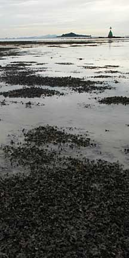 Large stretch of shore covered with this seaweed. Tuas, Sep 08 |
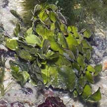 Sisters Islands, Jan 06 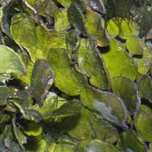 |
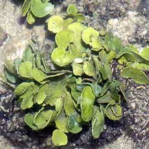 St. John's Island, May 06 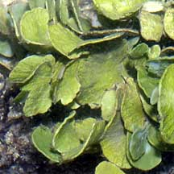 |
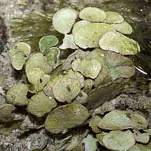 Sentosa, Jun 04 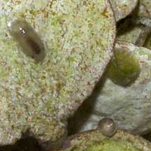 |

*Species are difficult to positively identify without close examination of internal parts.
On this website, they are grouped by external features for convenience of display
| Big coin green seaweeds on Singapore shores |
On wildsingapore
flickr
|
| Other sightings on Singapore shores |
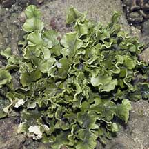 Raffles Lighthouse, Jul 06 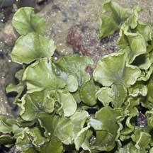 |
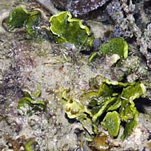 Pulau Pawai, Dec 09 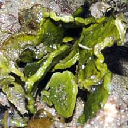 |
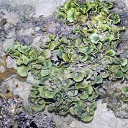 Pulau Senang, Jun 10 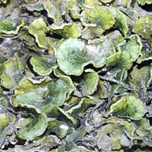 |
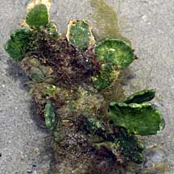 Terumbu Berkas, Jan 10 |
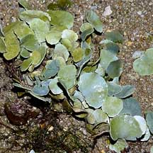 Pulau Pawai, Dec 09 |
Links
References
|